Community
Dinners
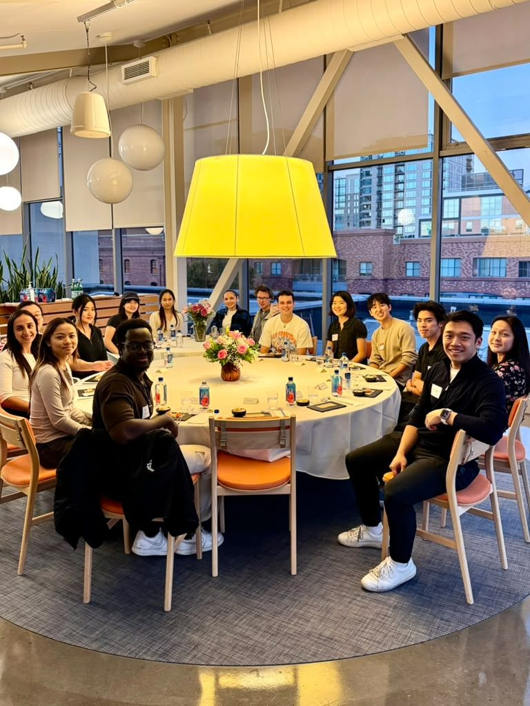
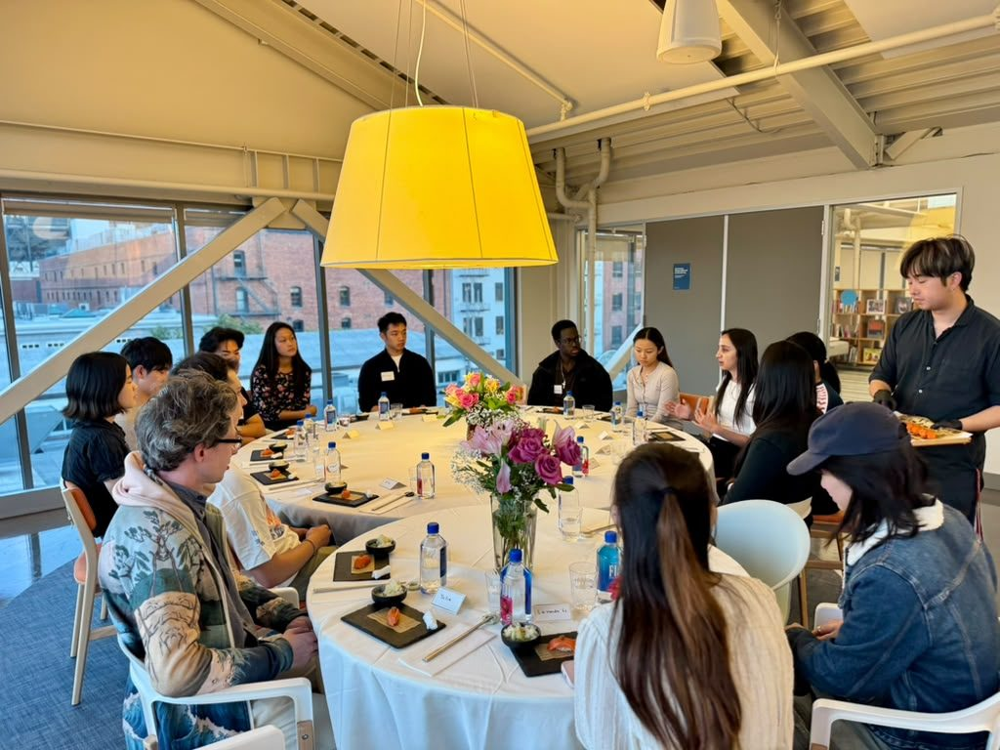
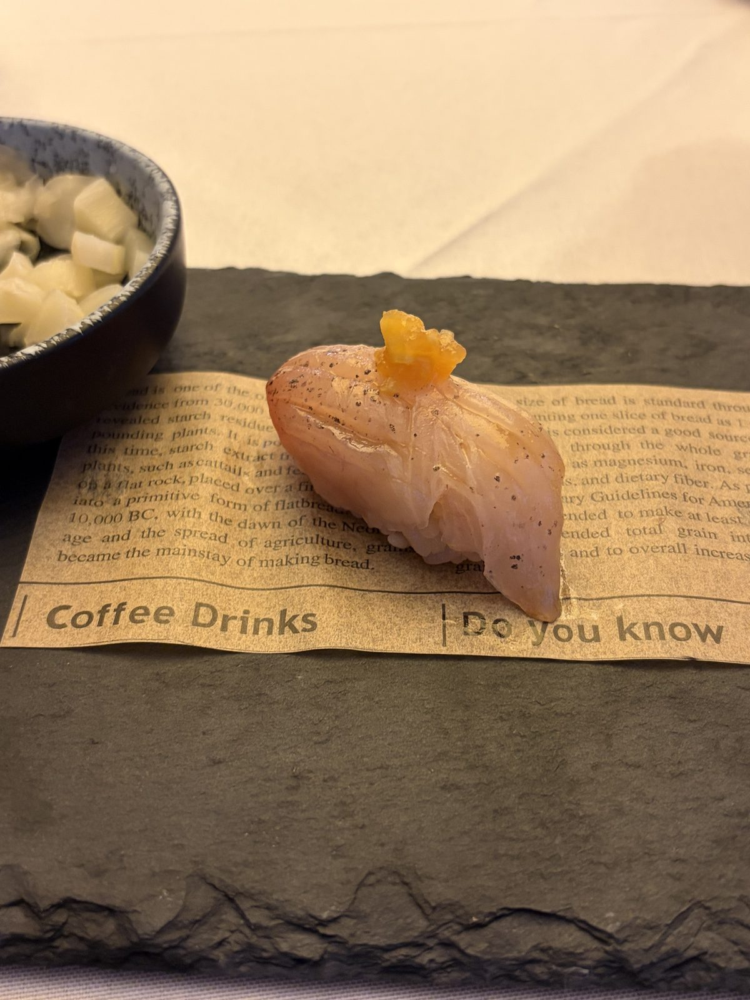
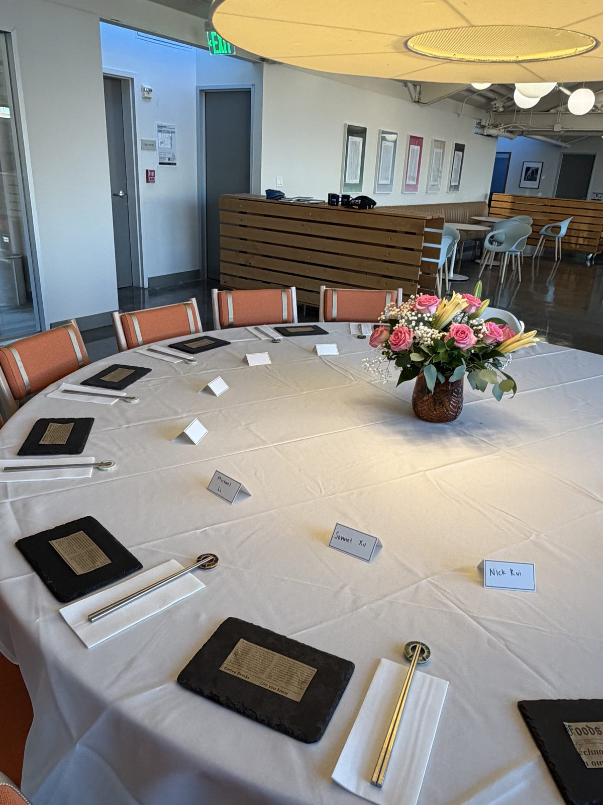
Student omakase dinnerOctober 2026
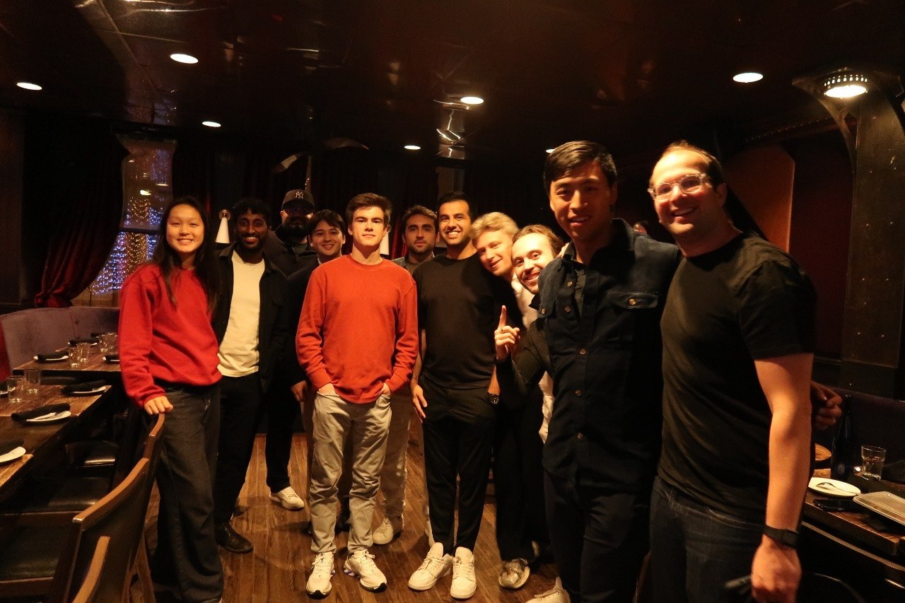
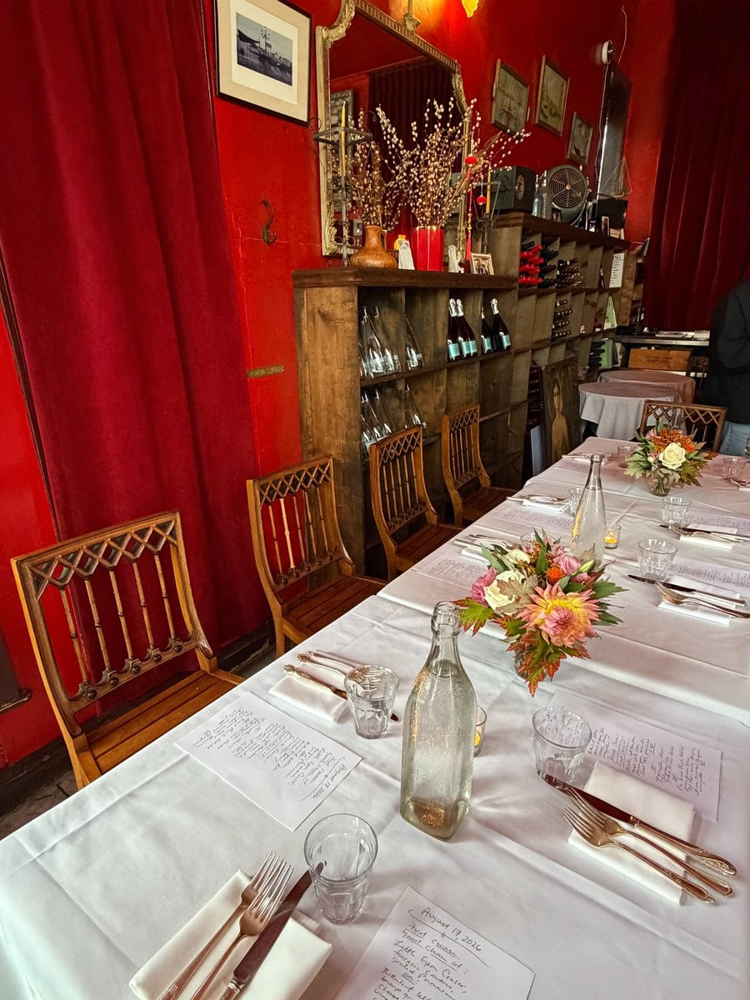
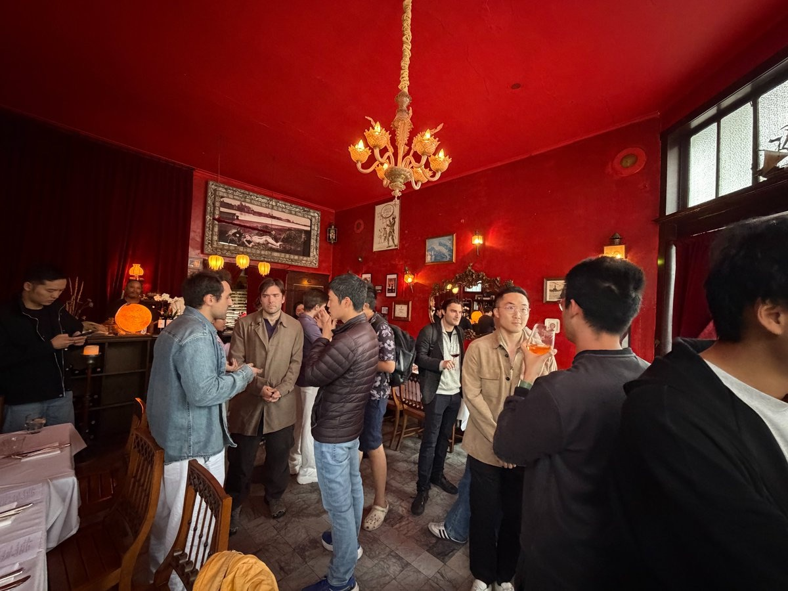
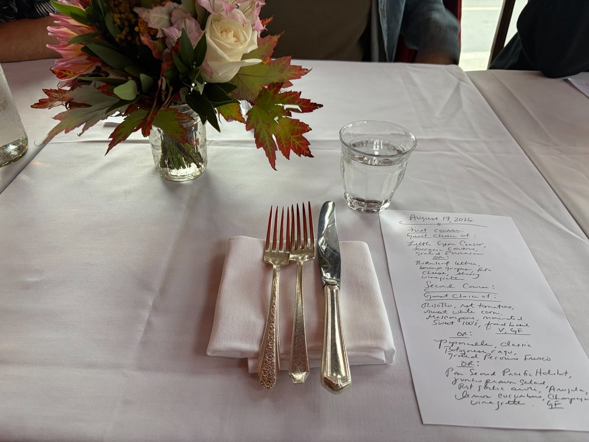
Compute dinnerAugust 2026
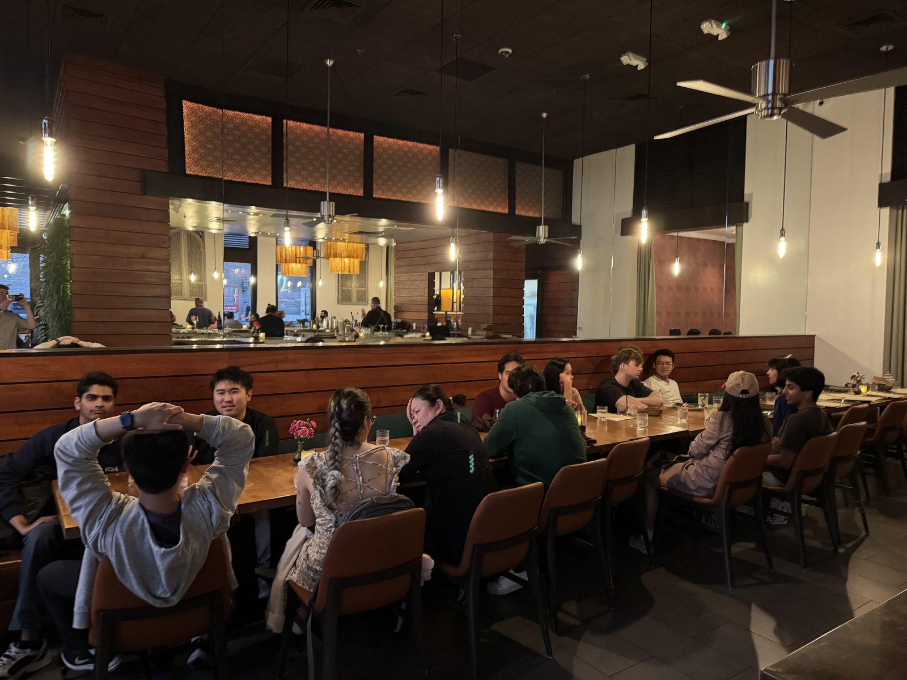
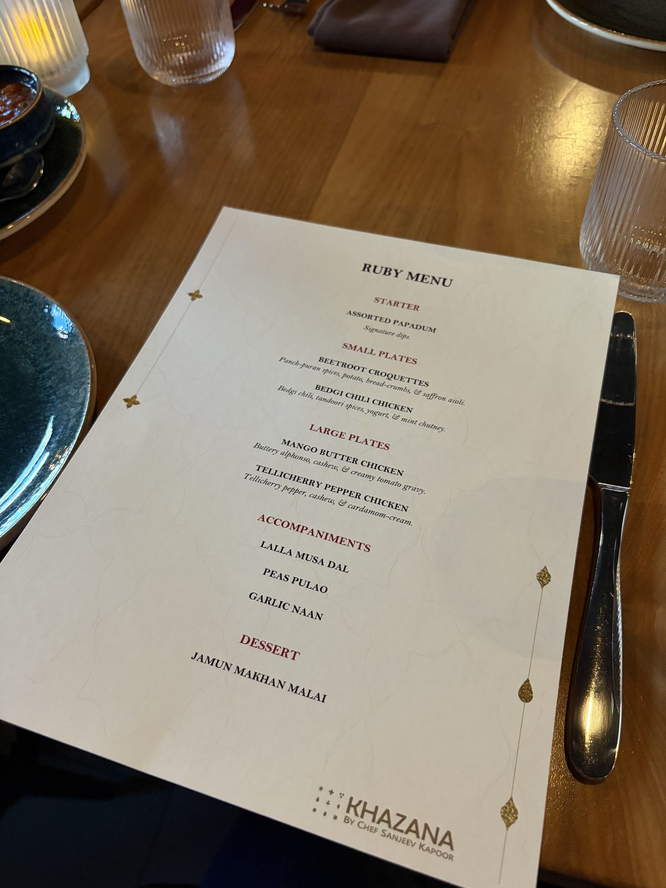
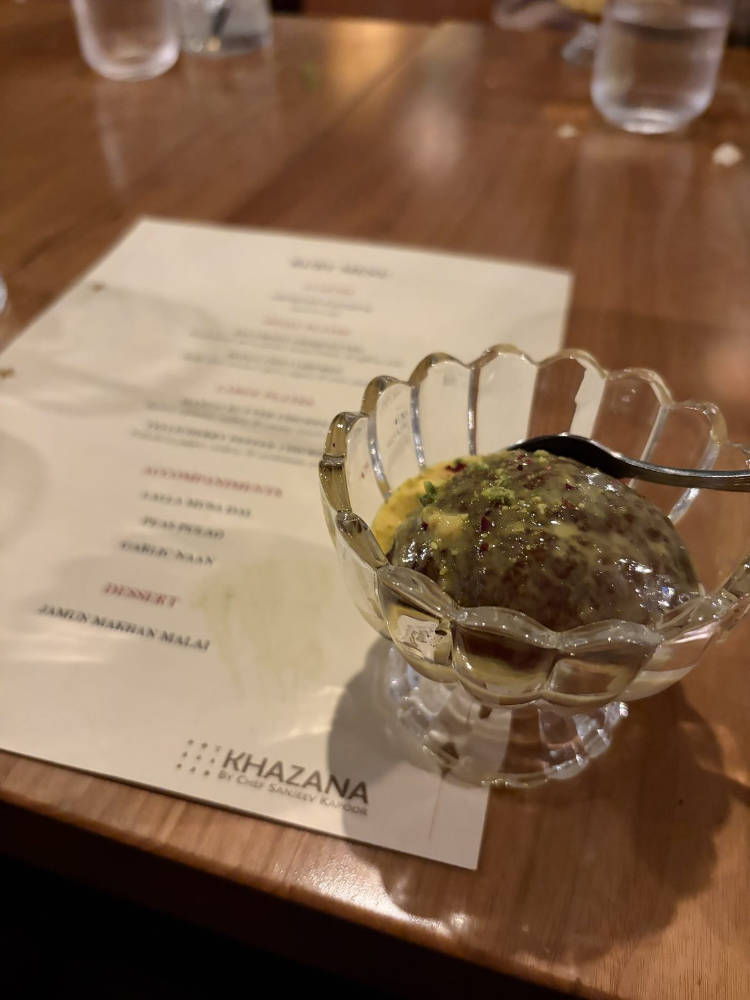
Blockchain dinnerJuly 2026
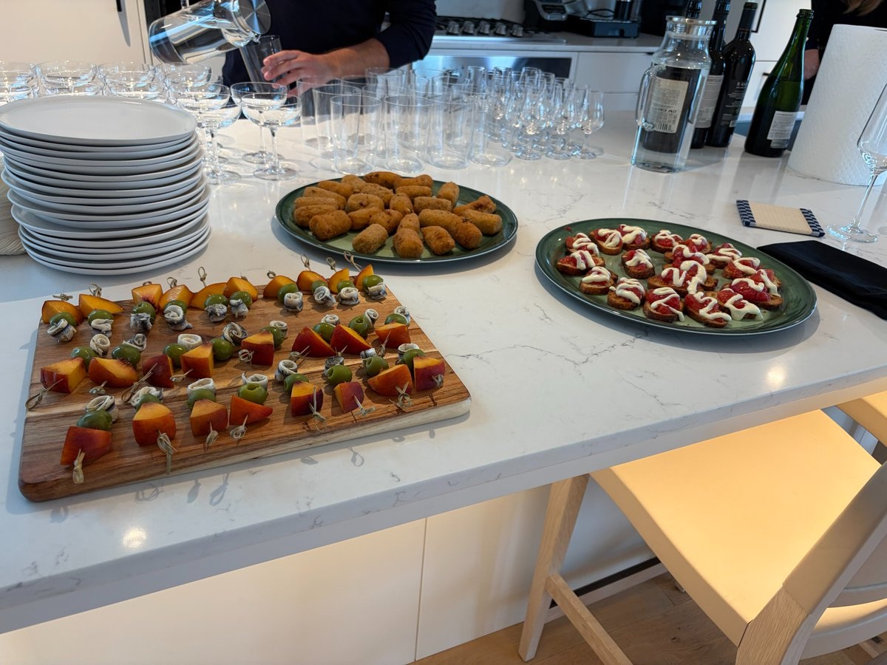
Stanford
-
Grad Crew
-
Alumni Reunion
-
New Student Orientation
-
Civic Disagreement
-
Structured Liberal Education